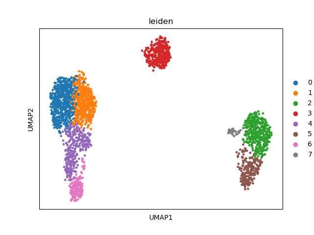

Note
Click here to download the full example code
cluster generation¶
This example demonstrates how to perform highly variable gene selection, PCA, nearest neighbor calculation, and clustering.
import besca as bc
import scanpy as sc
#import example dataset that has previously been filtered
adata = bc.datasets.pbmc3k_filtered()
## We get the raw matrix containing all the initial genes, keeping the filtering on the cells
adata = bc.get_raw(adata)
Out:
/.local/lib/python3.7/site-packages/anndata/compat/__init__.py:161: FutureWarning:
Moving element from .uns['neighbors']['distances'] to .obsp['distances'].
This is where adjacency matrices should go now.
/.local/lib/python3.7/site-packages/anndata/compat/__init__.py:161: FutureWarning:
Moving element from .uns['neighbors']['connectivities'] to .obsp['connectivities'].
This is where adjacency matrices should go now.
highly variable gene selection¶
select highly variable genes (considers correction for gene expression level)
#define thresholds for highly variable genes
variable_genes_min_mean = 0.01
variable_genes_max_mean = 5
variable_genes_min_disp = 0.4
#identify genes with variable expression
filter_result = sc.pp.filter_genes_dispersion(adata.X, min_mean=variable_genes_min_mean, max_mean=variable_genes_max_mean, min_disp=variable_genes_min_disp)
sc.pl.filter_genes_dispersion(filter_result)
nbr_variable_genes = sum(filter_result.gene_subset)
print('number of variable genes selected ', nbr_variable_genes )
#perform the actual filtering
adata = adata[:, filter_result.gene_subset]
Out:
number of variable genes selected 1897
/.local/lib/python3.7/site-packages/anndata/_core/anndata.py:1094: FutureWarning:
is_categorical is deprecated and will be removed in a future version. Use is_categorical_dtype instead
set random seed¶
To get reproducible results you need to define a random seed for all of the stochastic processes, such as e.g. PCA, neighbors, etc.
#set random seed
random_seed = 0
PCA¶
#log transform our data (is easier to work with numbers like this)
sc.pp.log1p(adata)
# Scale data to unit variance and zero mean, and cut-off at max value 10
sc.pp.scale(adata, max_value=10)
#calculate 50 principle components of the dataset
sc.tl.pca(adata, random_state=random_seed, svd_solver='arpack')
#visualize the amount of variance explained by each PC
sc.pl.pca_variance_ratio(adata)
#visualize the loadings onto the first 3 PCs
sc.pl.pca_loadings(adata)
Out:
/.conda/envs/besca_docs/lib/python3.7/site-packages/scanpy/preprocessing/_simple.py:339: UserWarning:
Revieved a view of an AnnData. Making a copy.
nearest neighbors¶
sc.pp.neighbors(adata, n_neighbors=15, random_state = random_seed, n_pcs=50)
louvain clustering¶
sc.tl.leiden(adata, random_state=random_seed)
UMAP and t-SNE generation¶
#calculate UMAP
sc.tl.umap(adata, random_state = random_seed)
#calculate t-SNE
sc.tl.tsne(adata, random_state = random_seed)
visualize the results¶
sc.pl.umap(adata, color = ['leiden'])
sc.pl.tsne(adata, color = ['leiden'])
- 
Out:
/.local/lib/python3.7/site-packages/anndata/_core/anndata.py:1192: FutureWarning:
is_categorical is deprecated and will be removed in a future version. Use is_categorical_dtype instead
Total running time of the script: ( 41 minutes 7.887 seconds)